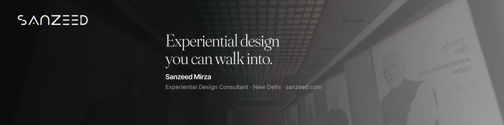
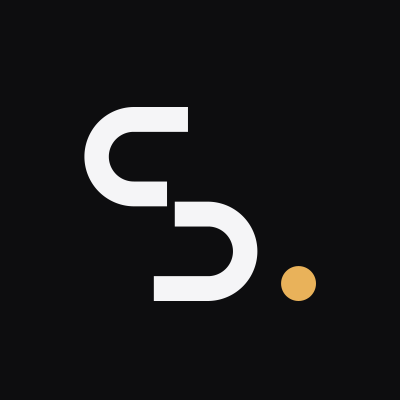

Experiential Design Consultant — museums, experience centres, pavilions, memorials, projection-mapping and light shows
New Delhi, India · Contact info
Messagesanzeed.com
Experiential design you can walk into. I direct museums, experience centres, pavilions, memorials, projection-mapping and light shows — one vision, from the brief to opening night. 15+ years, 90+ projects directed, 60+ museums and centres. Independent consultant since August 2026, based in New Delhi, working with institutions and brands wherever the project is.